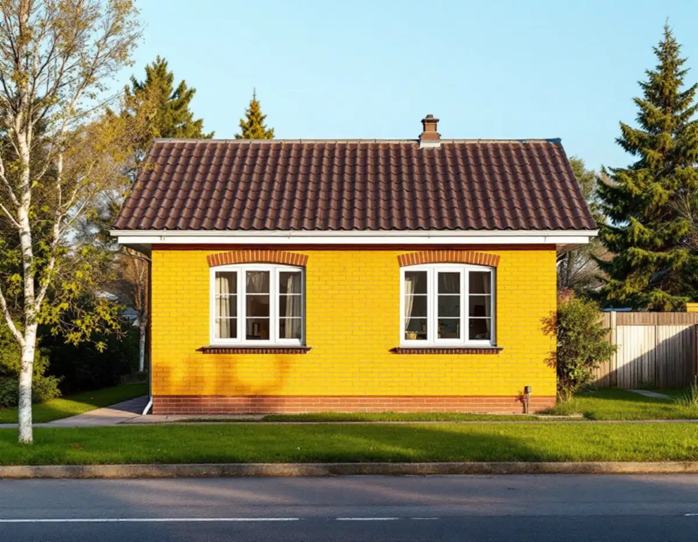
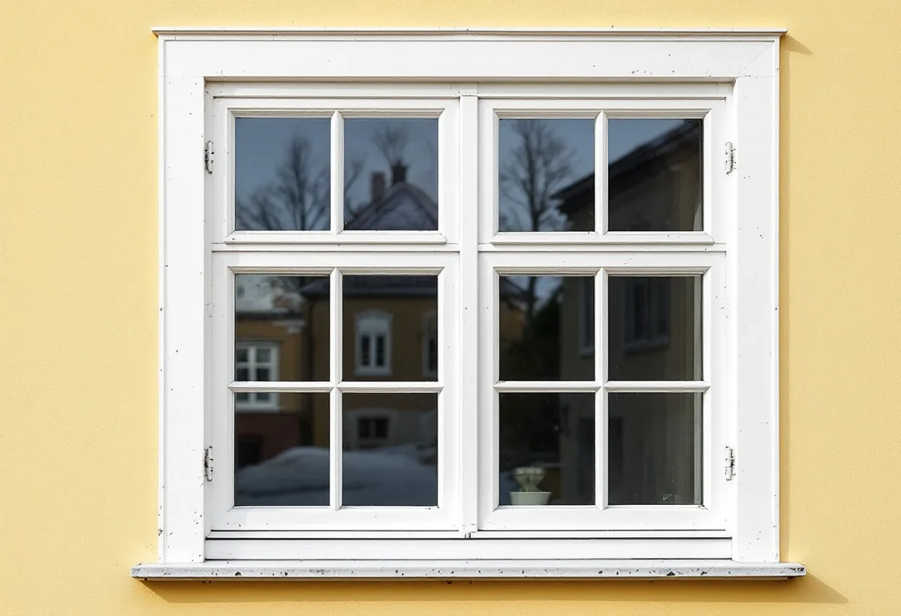

Epok och skick
Vi bestämmer husets byggår, vilka fönster som är original och hur de mår.
Botkyrkas villaområden byggdes under hela 1900-talet, och varje årtionde hade sina egna fönster. Det gör det lätt att välja fel modell när de gamla ska ersättas. Geal Entreprenad AB byter och renoverar fönster i Tullinge, Tumba, Uttran och övriga Botkyrka, utgår från husets egen tid och lämnar ett skriftligt kostnadsförslag efter ett gratis platsbesök.

I kulturmiljöprogrammet beskriver Botkyrka kommun Uttran som ett område där villabyggandet går att följa från 1910-talet fram till 2010-talet. För att visa skillnaderna har programmet ritat upp tidstypiska byggnadsdetaljer för varje epok, och fönstren skiljer sig tydligt åt mellan dem. Samma bild hänvisar programmet till för Tullinge villaområde.
Nationalromantikens villor från 1900- och 1910-talen har småspröjsade fönster med vita foder. Jugendhusen från samma tid har tvåluftsfönster där bara den övre delen är småspröjsad. Funktionalismen på 1930- och 1940-talen tog bort spröjsen helt, och programmet nämner även runda fönster som ett av funkisvillans drag.
Även 1950-talets villor fick tvåluftsfönster utan spröjs, här tillsammans med fönsterfoder i tegel och snedställda burspråk. På 1960-talet kom helglasade perspektivfönster med vädringslucka, och 1970-talets villor i vitt mexitegel fick perspektivfönster helt utan foder. Programmet beskriver också femtiotalets stora perspektivfönster som typiska för perioden.

För både Uttran och Tullinge skriver kommunen att villor med bevarad ursprunglig karaktär ska värnas, och att fönster, fasader, tak, entrépartier och balkonger ska ges en tidstypisk utformning när huset ändras. Riktlinjen pekar alltså inte ut en viss fönstermodell för hela Botkyrka. Den säger att fönstret ska höra ihop med det årtionde huset byggdes.
I praktiken går felet åt båda hållen. En funkisvilla kan förlora sin stramhet om den får spröjsade rutor som den inte hade från början, och en villa från 1910-talet blir platt om småspröjsen försvinner. På ett hus från 1960-talet är det perspektivfönstret med sin vädringslucka som bär fasaden, inte några detaljer i bågen.
Därför börjar vårt besök med att bestämma husets epok och hur mycket som finns kvar av originalet. Har fönstren redan bytts en gång kan ett nytt byte vara ett tillfälle att komma närmare den ursprungliga indelningen. Ska fasaden kring fönstren målas samtidigt, läs om målare i Botkyrka.
Boverket har sammanfattat flera domar om fönsterbyten. I ett vägledande avgörande från 2019 (MÖD 2019:25) gällde det två flerbostadshus i 20-talsklassicism där trä hade ersatts av aluminiumklätt trä, kulören ändrats, profilerna blivit kantigare, mittposterna grövre och de fasta spröjsen ersatts med löstagbara. Mark- och miljööverdomstolen ansåg att ändringen knappt märktes för den som passerar på gatan och att bygglov inte krävdes.
Boverket påpekar samtidigt att domen inte betyder att fönsterbyten saknar lovplikt, bara att de här två bytena inte krävde lov. I ett tidigare mål om en villa från 1920-talet (P 3853–15) skulle sju fönster och en fönsterdörr ersättas med aluminiumklädda. Där bedömdes bytet strida mot förvanskningsförbudet och varsamhetskravet, eftersom fönstren med tidsenliga profiler skulle gå förlorade.
Skillnaden ligger i hur värdefullt huset är och vad som faktiskt finns kvar av originalet. För ägaren är slutsatsen enkel: ju mer ursprungligt huset är, desto mer betyder material och profiler i det nya fönstret.
Ett nytt fönster räknas som en fasadändring, och för en- och tvåbostadshus är den normalt lovfri. Kommunen beskriver ändå en utökad lovplikt för byggnader och områden som omfattas av skyddsbestämmelser eller som är särskilt värdefulla utan att ha sådana bestämmelser.
För att ta reda på om det gäller ditt hus hänvisar kommunen till webbkartan. Under fliken Bibliotek och kultur finns lagret Kulturmiljöprogram, under Bygga och bo lagret Detaljplaner och under Riksintressen lagret Kulturmiljövård. Därtill ska översiktsplanen och eventuella gestaltningsprogram för området kontrolleras.
Vill du ha ett bindande besked kan du söka frivilligt bygglov. Byggnadsnämnden prövar då åtgärden och fattar ett formellt beslut, mot en bygglovsavgift. Ska takkupans fönster bytas i samma veva finns mer under takrenovering i Botkyrka.
Vi bestämmer husets byggår, vilka fönster som är original och hur de mår.
Kulturmiljöprogram, detaljplan och riksintressen kontrolleras för fastigheten.
Indelning, spröjs, foder och profiler väljs efter husets egen epok.
Byte, renovering, glas, montage och bleck redovisas var för sig och skriftligt.
Fönstren sätts in med drevning, tätning och nya smygar där det behövs.
Foder och bleck görs klart och vi går igenom varje fönster med dig.
Skatteverket godkänner rotavdrag för att reparera eller byta ut fönster i ett småhus och för att byta fönsterbleck. Företaget får dra av högst 30 procent av arbetskostnaden, och avdraget är högst 50 000 kr per person och år, eller 75 000 kr sammanlagt med rutavdrag.
Material och resor ger inget avdrag, och du ska äga huset medan arbetet görs. Vi drar avdraget på fakturan.
Antal fönster, om spröjs och profiler ska anpassas till husets epok, om perspektivfönster ska tillverkas i stora format, hur mycket foder, smygar och bleck som ska göras om och om ett frivilligt bygglov ska sökas. Du får ett skriftligt kostnadsförslag efter ett kostnadsfritt besök.
Byta eller renovera fönster.
Fönsterbyte i Stockholm →Takbyte, takbesiktning och plåtarbeten.
Takläggare i Botkyrka →Tullinge, Uttran och Tumba.
Takrenovering i Botkyrka →Kartlagren, checklistan och vattnet.
Attefallshus i Botkyrka →Flytt av badrum, stammar och frånluft.
Badrumsrenovering i Botkyrka →Nytt hus, utfart och byggarbetsplats.
Byggföretag i Botkyrka →Tullinges villor och kulörbytet.
Fasadmålning i Botkyrka →Tegel, trä och puts från efterkrigstiden.
Fasadrenovering i Botkyrka →Radhusen i Tuna.
Fönsterrenovering i Botkyrka →Kataloghus, källargolv och trägolv.
Golvläggare i Botkyrka →Furugolv och parkett i villorna.
Golvslipning i Botkyrka →Kök i villor och radhus, för att bo kvar.
Köksrenovering i Botkyrka →Tidstypiska kulörer från 1960-tal till gamla byar.
Målare i Botkyrka →Rännor, stuprör och plåttak i Botkyrka.
Plåtslagare i Botkyrka →Altan, plank och förråd i villaområdena vid järnvägen.
Snickare i Botkyrka →Material, solpaneler och takkupor.
Takbyte i Botkyrka →Ny tapet på träfiberskivor och gamla lager.
Tapetsering i Botkyrka →Villorna i Tullinge, Uttran och kartan.
Tillbyggnad i Botkyrka →Tullingehuset i omgångar.
Totalrenovering i Botkyrka →